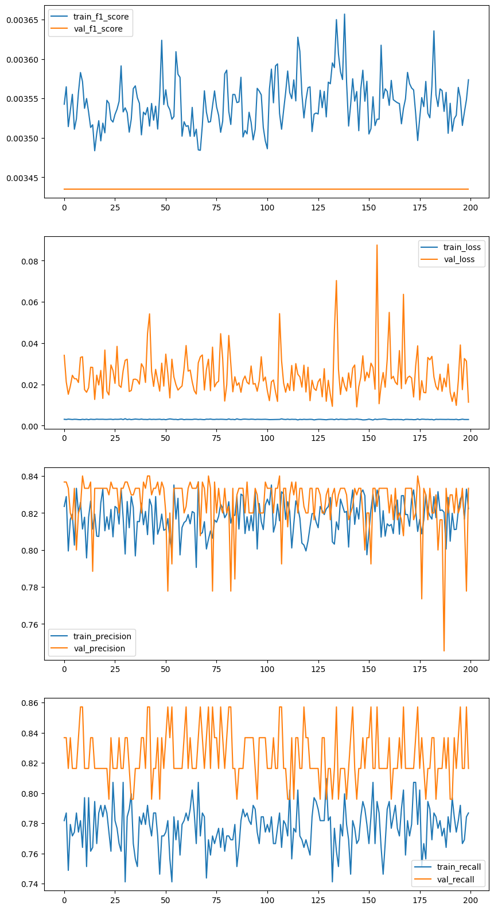

import keras_tuner as kt
import tensorflow as tf
from tensorflow.keras.metrics import Precision, Recall, F1Score
import matplotlib.pyplot as pltKaggle CreditCard Fraud Detection (개선2 : Keras tuner, Hyperband search)
개요
- 딥러닝 스터디에 제출했던 과제에 대한 피드백 반영 및 개선(지속 개선예정)
- 원본데이터 : Kaggle CreditCard Fraud Detection
- 적용한 피드백
- Keras tuner 사용시 처음부터 Learning rate를 Test대상에 포함
- Early stopping이 아닌 전체 epoch 수행 후 최적포인트를 적용하는 방법도 해보려했으나, 학습자체에 시간이 오래걸려 제외
- 추가 테스트
- 다른 Adam계열 Optimizer를 Keras tuner후보군에 추가
- Early stopping에 대해 Keras callback의 ReduceLROnPlateau도 사용해봄
- Random search, Grid Search 를 알아보다가 Hyperband라는 것도 있어서 사용해봄
- Random search는 무작위 탐색으로 효율적이지만 최적일수도 있고 아닐수도 있음
- Grid search는 가능한 모든 조합을 탐색하여 오래 걸림
- 효율적이지만 최적이 아닐 확률이 있다는 점과 가정용 컴퓨터에서 계산효율적이지 못한 방법론이 맞는지에 대한 고민
- Hyperband가 정해진 시간내에 중간 결과를 기준으로 조합 후보를 버리는 등 결합된 방법론으로 보여 적용해봄
- 수업에 나온 Leaky ReLU도 적용해보고 싶었지만, Tuner호환 등 여러 문제가 있어 제외함
- 학습한 모델은 저장해두고 향후 다른 것도 해보기
- 결과
- 초보 수준에서는 Tuner가 좋은 파라미터를 정해줄 것을 기대하여 막연히 점수가 개선될 것을 기대했으나, 실험 결과로는 유의미한 개선점이 보이지는 않았음
- 모델평가(Stratified Fold만 적용)
- [Train]7121/7121 - 4s - 573us/step - f1_score: 0.0071 - loss: 0.0024 - precision_7: 0.9479 - recall_7: 0.8782
- [Test]891/891 - 1s - 598us/step - f1_score: 0.0072 - loss: 0.0033 - precision_7: 0.9000 - recall_7: 0.7347
- 모델평가(Tuner + Learning rate scheduler + Early stopping 추가 적용)
- [Train]8011/8011 - 6s - 741us/step - f1_score: 0.0035 - loss: 0.0151 - precision: 0.8372 - recall: 0.8126
- [Test]891/891 - 1s - 772us/step - f1_score: 0.0034 - loss: 0.0216 - precision: 0.7600 - recall: 0.7755
- 모델평가(Stratified Fold만 적용)
- Optimizer나 Hyperband 등 세부적인 내용의 고려 없이 적용되어 긍정적인 결과가 나오지 않은 것으로 추정
- 초보 수준에서는 Tuner가 좋은 파라미터를 정해줄 것을 기대하여 막연히 점수가 개선될 것을 기대했으나, 실험 결과로는 유의미한 개선점이 보이지는 않았음
개선과제 진행
Keras Tuner 사용한 딥러닝 모델 개선
- Learning rate를 처음 튜닝부터 포함
- Optimizer를 다양하게 고려 (Adam계열)
- Leaky ReLU를 Activation 후보군에 포함하려했으나, Tuner지원하지않는 것으로 보여 제외
- Choice 함수에는 int, float, str, bool만 가능하여 아래와 같이 추가했음
from keras.utils import get_custom_objects from keras.layers import LeakyReLU get_custom_objects().update({'leaky-relu': LeakyReLU()}) # Add LeakyReLU activation = hp.Choice('activation'+str(i),values=['relu','elu','leaky-relu']) # For Activation- 그러나 아래의 오류가 계속 발생하여 제외함
>>> ValueError: Could not interpret activation function identifier: leaky-relu
def build_model(hp):
model = tf.keras.models.Sequential()
# Input & Flatten
model.add(tf.keras.layers.Input((29,1)))
model.add(tf.keras.layers.Flatten())
# Hidden Layers
for i in range(hp.Int('num_layers',min_value=1,max_value=20)):
# For Dense
units = hp.Int('units',min_value=10,max_value=150,step=5) # For Neurons
activation = hp.Choice('activation'+str(i),values=['relu','elu']) # For Activation
model.add(tf.keras.layers.Dense(units, activation=activation,
# 기본값은 glorot_uniform(Xavier), He는 Kaiming
kernel_initializer=tf.keras.initializers.HeNormal()))
# Add Batch Normalization
model.add(tf.keras.layers.BatchNormalization()) # Layer통과후 & Activation 전
# For Dropout
dropout_rate = hp.Choice('dropout'+str(i),values=[0.1,0.2,0.3,0.4,0.5,0.6,0.7,0.8,0.9])
model.add(tf.keras.layers.Dropout(dropout_rate))
model.add(tf.keras.layers.Dense(1, activation='sigmoid')) # 이진분류이므로 Sigmoid사용
# Model setting
hp_learning_rate = hp.Choice('learning_rate', values = [0.05, 0.01, 0.001])
dict_optimizers_with_lr = {
'Adam': tf.keras.optimizers.Adam(learning_rate=hp_learning_rate),
'Nadam': tf.keras.optimizers.Nadam(learning_rate=hp_learning_rate),
'AdamW': tf.keras.optimizers.AdamW(learning_rate=hp_learning_rate),
'Adamax': tf.keras.optimizers.Adamax(learning_rate=hp_learning_rate)
}
hp_optimizer=hp.Choice('optimizer',values=['Adam','Nadam','AdamW','Adamax'])
model.compile(optimizer=dict_optimizers_with_lr[hp_optimizer],
loss='binary_crossentropy',
metrics=[F1Score(average="weighted"), Precision(), Recall()])
return model
with tf.device('/device:GPU:0'):
tuner = kt.Hyperband(build_model,
objective = kt.Objective('val_f1_score', direction='max'),
max_epochs = 10,
project_name = 'test_hyperband')
for idx in kfold_dataset.keys():
## 모델 학습
tuner.search(kfold_dataset[idx]['x_train'], kfold_dataset[idx]['y_train'],
epochs=10,
validation_data=(kfold_dataset[idx]['x_validation'], kfold_dataset[idx]['y_validation']))Trial 30 Complete [00h 02m 29s]
val_f1_score: 0.00343498052097857
Best val_f1_score So Far: 0.4999999403953552
Total elapsed time: 00h 45m 46stuner.get_best_hyperparameters()[0].values{'num_layers': 4,
'units': 105,
'activation0': 'elu',
'dropout0': 0.5,
'learning_rate': 0.05,
'optimizer': 'Nadam',
'activation1': 'relu',
'dropout1': 0.6,
'activation2': 'relu',
'dropout2': 0.9,
'activation3': 'elu',
'dropout3': 0.3,
'activation4': 'relu',
'dropout4': 0.9,
'activation5': 'elu',
'dropout5': 0.4,
'activation6': 'elu',
'dropout6': 0.3,
'activation7': 'elu',
'dropout7': 0.2,
'activation8': 'elu',
'dropout8': 0.5,
'activation9': 'elu',
'dropout9': 0.6,
'activation10': 'elu',
'dropout10': 0.5,
'activation11': 'relu',
'dropout11': 0.9,
'activation12': 'elu',
'dropout12': 0.6,
'activation13': 'elu',
'dropout13': 0.3,
'activation14': 'relu',
'dropout14': 0.5,
'activation15': 'elu',
'dropout15': 0.8,
'activation16': 'elu',
'dropout16': 0.2,
'activation17': 'elu',
'dropout17': 0.1,
'activation18': 'elu',
'dropout18': 0.2,
'activation19': 'elu',
'dropout19': 0.5,
'tuner/epochs': 10,
'tuner/initial_epoch': 0,
'tuner/bracket': 0,
'tuner/round': 0}model_by_tuner= tuner.get_best_models(num_models=1)[0]
model_by_tuner.summary()Model: "sequential"
┏━━━━━━━━━━━━━━━━━━━━━━━━━━━━━━━━━┳━━━━━━━━━━━━━━━━━━━━━━━━┳━━━━━━━━━━━━━━━┓ ┃ Layer (type) ┃ Output Shape ┃ Param # ┃ ┡━━━━━━━━━━━━━━━━━━━━━━━━━━━━━━━━━╇━━━━━━━━━━━━━━━━━━━━━━━━╇━━━━━━━━━━━━━━━┩ │ flatten (Flatten) │ (None, 29) │ 0 │ ├─────────────────────────────────┼────────────────────────┼───────────────┤ │ dense (Dense) │ (None, 105) │ 3,150 │ ├─────────────────────────────────┼────────────────────────┼───────────────┤ │ batch_normalization │ (None, 105) │ 420 │ │ (BatchNormalization) │ │ │ ├─────────────────────────────────┼────────────────────────┼───────────────┤ │ dropout (Dropout) │ (None, 105) │ 0 │ ├─────────────────────────────────┼────────────────────────┼───────────────┤ │ dense_1 (Dense) │ (None, 105) │ 11,130 │ ├─────────────────────────────────┼────────────────────────┼───────────────┤ │ batch_normalization_1 │ (None, 105) │ 420 │ │ (BatchNormalization) │ │ │ ├─────────────────────────────────┼────────────────────────┼───────────────┤ │ dropout_1 (Dropout) │ (None, 105) │ 0 │ ├─────────────────────────────────┼────────────────────────┼───────────────┤ │ dense_2 (Dense) │ (None, 105) │ 11,130 │ ├─────────────────────────────────┼────────────────────────┼───────────────┤ │ batch_normalization_2 │ (None, 105) │ 420 │ │ (BatchNormalization) │ │ │ ├─────────────────────────────────┼────────────────────────┼───────────────┤ │ dropout_2 (Dropout) │ (None, 105) │ 0 │ ├─────────────────────────────────┼────────────────────────┼───────────────┤ │ dense_3 (Dense) │ (None, 105) │ 11,130 │ ├─────────────────────────────────┼────────────────────────┼───────────────┤ │ batch_normalization_3 │ (None, 105) │ 420 │ │ (BatchNormalization) │ │ │ ├─────────────────────────────────┼────────────────────────┼───────────────┤ │ dropout_3 (Dropout) │ (None, 105) │ 0 │ ├─────────────────────────────────┼────────────────────────┼───────────────┤ │ dense_4 (Dense) │ (None, 1) │ 106 │ └─────────────────────────────────┴────────────────────────┴───────────────┘
Total params: 38,326 (149.71 KB)
Trainable params: 37,486 (146.43 KB)
Non-trainable params: 840 (3.28 KB)
딥러닝 모델에 Learning rate scheduler와 Early stopping 적용
- Learning rate scheduler와 Early stopping 모두 weighted f1-score는 지원하지 않아, val_f1-score로 사용
UserWarning: Learning rate reduction is conditioned on metric `<F1Score name=f1_score>`
which is not available. Available metrics are
: f1_score,loss,precision,recall,val_f1_score,val_loss,val_precision,val_recall,learning_rate.
UserWarning: Early stopping conditioned on metric `<F1Score name=f1_score>`
which is not available. Available metrics are
: f1_score,loss,precision,recall,val_f1_score,val_loss,val_precision,val_recall,learning_ratefrom tensorflow.keras.callbacks import EarlyStopping
from tensorflow.keras.callbacks import LearningRateScheduler
from tensorflow.keras.callbacks import ReduceLROnPlateau
import numpy as np
import keras
import matplotlib.pyplot as plttotal_epoch_value = 1000
with tf.device('/device:GPU:0'):
reduce_lr = ReduceLROnPlateau(monitor='val_f1_score',
factor=0.2, # lr감소치. 현재 lr이 0.01이라면 0.01*0.2를 적용
patience=10, # 개선에 대한 허용치. 10 epoch까지 개선이 없다면 적용
mode='max', # auto, max, min 옵션 있음
min_lr=0.001)
es = EarlyStopping(monitor='val_f1_score', mode='max', verbose=1, patience=200)
# 모델 학습
for idx in kfold_dataset.keys():
history_tuner = model_by_tuner.fit(kfold_dataset[idx]['x_train'], kfold_dataset[idx]['y_train'],
epochs=total_epoch_value,
callbacks=[reduce_lr, es],
validation_data=(kfold_dataset[idx]['x_validation'], kfold_dataset[idx]['y_validation']))# 시각화
fig, axs = plt.subplots(nrows=4, ncols=1, figsize=(10,20))
for idx, key in enumerate(history_tuner.history.keys()):
if idx == 4:
break
axs[idx].plot(history_tuner.history[key], label=f"train_{key}")
axs[idx].plot(history_tuner.history[f"val_{key}"], label=f"val_{key}")
axs[idx].legend()
plt.show()
# 모델 평가
print('* 모델평가')
model_by_tuner.evaluate(x_train, y_train, verbose=2)
model_by_tuner.evaluate(x_test, y_test, verbose=2)* 모델평가
8011/8011 - 6s - 741us/step - f1_score: 0.0035 - loss: 0.0151 - precision: 0.8372 - recall: 0.8126
891/891 - 1s - 772us/step - f1_score: 0.0034 - loss: 0.0216 - precision: 0.7600 - recall: 0.7755[0.02163444086909294,
0.00343498052097857,
0.7599999904632568,
0.7755101919174194]- 모델평가(Stratified Fold만 적용)
- 7121/7121 - 4s - 573us/step - f1_score: 0.0071 - loss: 0.0024 - precision_7: 0.9479 - recall_7: 0.8782
- 891/891 - 1s - 598us/step - f1_score: 0.0072 - loss: 0.0033 - precision_7: 0.9000 - recall_7: 0.7347
- 모델평가(Tuner + Learning rate scheduler + Early stopping 추가 적용)
- 8011/8011 - 6s - 741us/step - f1_score: 0.0035 - loss: 0.0151 - precision: 0.8372 - recall: 0.8126
- 891/891 - 1s - 772us/step - f1_score: 0.0034 - loss: 0.0216 - precision: 0.7600 - recall: 0.7755
학습한 모델 저장
model_by_tuner.save('model_by_tuner_fitted.keras')loadedm_model = keras.models.load_model('model_by_tuner.keras')
print('* 모델평가')
loadedm_model.evaluate(x_train, y_train, verbose=2)
loadedm_model.evaluate(x_test, y_test, verbose=2)* 모델평가
8011/8011 - 8s - 1ms/step - f1_score: 0.0035 - loss: 0.0151 - precision: 0.8372 - recall: 0.8126
891/891 - 1s - 786us/step - f1_score: 0.0034 - loss: 0.0216 - precision: 0.7600 - recall: 0.7755[0.02163444086909294,
0.00343498052097857,
0.7599999904632568,
0.7755101919174194]
Copyright © 2024 Kibok Park All rights reserved.